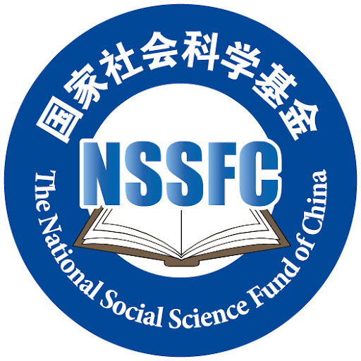

|
通讯地址: 北京市房山区北京理工大学良乡校区文萃楼L601 Email: lihongzheng [@] bit[DOT] edu [DOT] cn |
个人简介
李洪政，北京理工大学外国语学院长聘副教授、博士生导师，语言工程与认知计算工信部重点实验室成员。中国中文信息学会青工委委员，中国计算机学会自然语言处理专委会执行委员，中国语文现代化学会阅读分级专委会常务理事。主要研究方向长期聚焦于自然语言处理与大语言模型、语料库语言学、智慧外语教育等多学科交叉领域，致力于借助计算方法研究各类语言学问题及落地应用。近年来主持承担国家社科基金青年项目、国家自科基金青年项目、中国博士后科研项目、工信部/教育部科研项目、国家重点实验室开放课题等省部级和国家级课题多项。已在SCI、SSCI、CSSCI、CCF-A等国际国内期刊和知名学术会议发表高水平论文近20篇。
自2026年春季开始招收博士研究生，欢迎具有扎实（Python）编程背景并对自然语言处理等领域具有强烈兴趣的学生咨询报考！
2025.01起, 北京理工大学外国语学院，长聘副教授、博士生导师
2020.11-2024.12, 北京理工大学外国语学院，预聘助理教授、硕士生导师
2018.07-2020.10, 北京理工大学计算机学院，博士后
教育经历
2014.09-2018.06, 北京师范大学，计算语言学博士
2016.08-2017.08, 蒙特利尔大学计算机系，国家公派访问学生
2011.09-2014.06, 北京师范大学，计算语言学硕士
讲授课程
研究生课程
智能翻译技术发展与应用（春季学期）
计算机辅助翻译（秋季学期）
现代语言教育技术 (2021-2023年秋季学期)
语言信息处理程序设计（Python）（秋季学期）
语言大数据技术（秋季学期）
本科生课程
毕业论文
计算语言学导论
语言数据科学
研究兴趣
自然语言处理与大语言模型
机器翻译
语料库语言学
科研项目
- 
国家社科基金青年项目(2024.10-2027.12)

国家自科基金青年项目(2020.01-2022.12)
工信部软课题项目(2021.05-2021.10)
国家重点实验室开放课题项目(2021.12-2023.12)
中国博士后科学基金项目(2018.11-2020.11)
北京理工大学青年教师启动项目(2020.11-2023.12)
代表性论文
2025
李洪政, 王若锦, 冯冲, 刘芳. 语言模型辅助的英语科技论文摘要语步结构语料库构建研究. 外语学刊.
2024
李洪政, 王若锦, 冯冲, 刘芳. 英语科技论文摘要语步结构语料库构建研究. Proceedings of China National Conference of Computational Linguistics (CCL2024).
Hongzheng Li, et al. RAAMove: A Corpus for Analyzing Moves in Research Article Abstracts. Proceedings of the 2024 Joint International Conference on Computational Linguistics, Language Resources and Evaluation (LREC-COLING 2024).
2023
Hongzheng Li, Ruojin Wang, Can Shi. “Oh My God! Buy it!” Analysis on the Characteristics of Anchor's speech in Live Broadcast E-commerce and Purchase Intention: A Linguistics Perspective. Sage Open.(SSCI)
J. Lin, Hongzheng Li, et al. Move Structure Recognition in Scientific Papers with Saliency Attribution. Proceedings of 17th China Conference on Knowledge Graph and Semantic Computing (CCKS 2023).(Best Award of Resource Paper!)
2022
Hongzheng Li, Ruojin Wang. Book Review: the Routledge Handbook of Translation and Ethics. Language Resources and Evaluation.(SCI, DOI:https://doi.org/10.1007/s10579-022-09626-z)
2021
Hongzheng Li, Chong Feng, Heyan Huang. 稀缺资源语言神经网络机器翻译研究综述(A Survey on Low-resource Neural Machine Translation). 自动化学报.(CCF-A Journal)
2020
J.Sha, L. Zhou, C. Feng, Hongzheng Li, et al. 面向司法领域的高质量开源藏汉平行语料库构建(A High-quality Open Source Tibetan-Chinese Parallel Corpus Construction of Judicial Domain). 19th Chinese National Conference on Computational Linguistics(CCL2020).(Best Paper Award!)
Hongzheng Li, J. Sha, C. Shi. Revisiting Back-Translation for Low-Resource Machine Translation Between Chinese and Vietnamese. IEEE ACCESS.
J.R. Zhang, Hongzheng Li, S.M. Shi, et al. Dynamic Attention Aggregation with BERT for Neural Machine Translation. Proceedings of International Joint Conference on Neural Networks (IJCNN2020).(CCF-C Conference)
2019
Y.Zhang, C.Feng, Hongzheng Li. Quality Estimation with Transformer and RNN Architectures. Proceedings of China Conference of Machine Translation(CCMT2019).
2018
Y. Qiu, Hongzheng Li, S. Li, et al. Revisiting Correlations between Intrinsic and Extrinsic Evaluations of Word Embeddings, Proceedings of China National Conference of Computational Linguistics (CCL2018).(Best Paper Award!)
2017
李洪政,晋耀红.汉语介词短语自动识别研究综述.中文信息学报.
李洪政,赵凯,胡韧奋等. 面向专利领域的汉英机器翻译融合系统.情报工程.
H.Z. Li, P. Langlais, Y. Jin.Translating Implicit Discourse Connectives Based on Cross-lingual Annotation and Alignment. Proceedings of Workshop on Discourse Machine Translation of EMNLP.
2016
H.Z. Li, Y. Jin. Classifying Commas for Patent Machine Translation. Proceedings of China Workshop on Machine Translation(CWMT).
2015
李洪政,朱筠,晋耀红.汉英专利机器翻译中动-介兼类词自动识别.计算机工程与应用.
学术兼职
中国中文信息学会青工委委员
中国计算机学会自然语言处理专委会执行委员
中国语文现代化学会阅读分级专委会常务理事
国家语委语言治理研究融智协同创新中心研究员